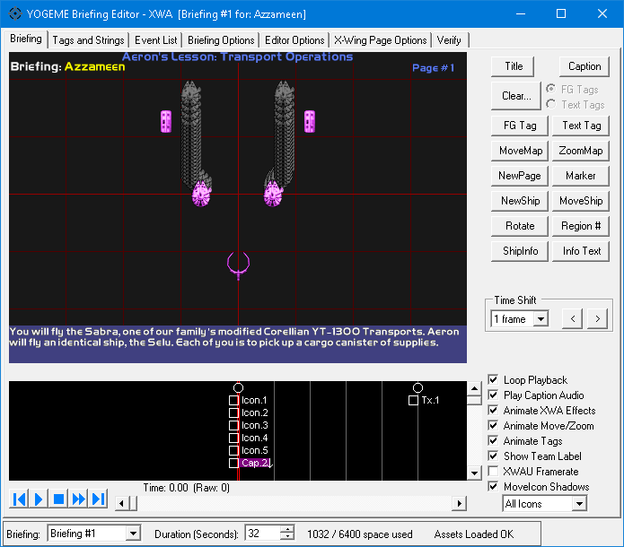
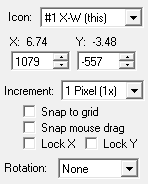
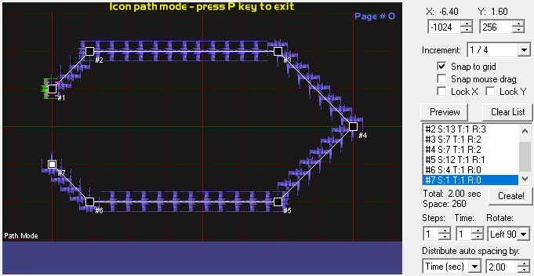
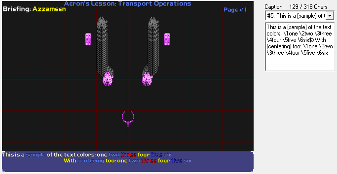
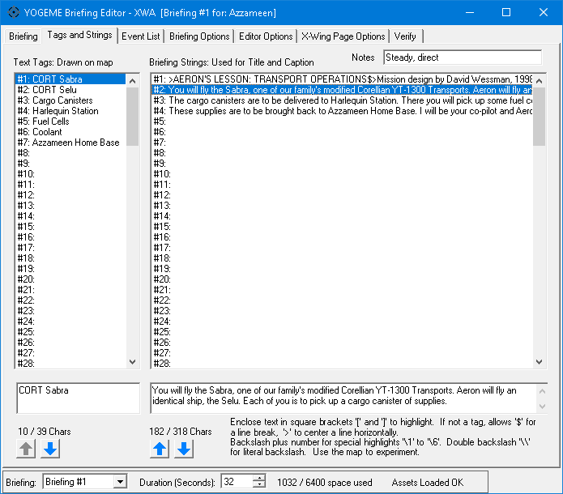

FG Icon selected
Caption selected


NOTE: The full manual for the briefing dialog is located here. It is far more comprehensive than anything listed in this document. It covers navigation, hotkeys, and explains all the controls and event nuances in more detail.
Opening the Briefing Dialog will bring you to the main Briefing Map tab.

This is the pre-mission briefing just before you fly. This will be a very brief overview of the editor and its main features.
The map screen is front and center, hard to miss. To the right of the map is the sidebar. Below the map is the timeline.
The sidebar changes dynamically depending on what is selected.
When nothing is selected, there are buttons to create events, time shift buttons that can add or remove time between events, and some quick toggle options that affect how the map is displayed.
When something is selected, there will be controls for manipulating the selected item.
At the very bottom, in the footer area, there is a list of briefings. XWA allows for two multiplayer teams, so it has two slots.
The duration is how long the briefing will play before looping.
All events consume event space, and there's a limited amount. XWA is the one platform where you may need to pay attention to the limit, especially when using the new icon movement features.
Finally some status text.
On an empty briefing, the status text should say "Assets Loaded OK". If it doesn't, you need to assign the installation paths in YOGEME's Options menu. See setup in the main manual.
The status text may also report verification issues, to detect common problems in a briefing. As you make changes, it will describe how many of those changes can be undone.
This is what you will see in-game. It is nearly pixel accurate to the original game. It supports animated craft icons, is capable of highlighting icons, displaying lines of text, as well as moving and zooming the map. It also has several animated effects for region transitions or ship information segments.
XWA targets a framerate of 24 fps, but in practice it animates at approximately 21 fps. Same as XvT. XWA Upgrade is generally faster, achieving the correct framerate of 24 fps. However XWAU 2025 with the new HD briefings may have performance issues or inconsistent framerates in game.
Note: visual accuracy is not supported for XWAU 2025's HD briefings. The modded game uses a new rendering engine with different fonts and aspect ratios. The HD briefing is similar enough that it generally won't matter, but if you're aiming for very specific pixel locations, you'll need to test in game rather than fully rely on YOGEME's briefing map.
XWA's map is reasonably sized, larger than the other games. In the Editor Options tab, under Map Scaling, it is recommended to use Dynamic To Window. XWA has anti-aliased fonts, so pixel scaling is generally unimportant here. Although if you have a large desktop, and can support a large pixel scaling size, the rendering performance will be faster.
XWA evolved as an upgrade to XvT. While most of the core features are identical, there are several new changes. Using dedicated icons instead of flightgroups is the biggest change, as well as regions and ship information segments.
XWA still retains XvT's multiplayer roots, although it's been scaled down. It supports 2 briefings. At the very bottom, in the footer area, both briefings are available there. For singleplayer missions, only one is used.
The available event space is vastly increased to accommodate the icon animation events.
The available number of tag strings and caption strings is greatly increased. However the number of text tags that can be active at once is still only 8.
The new briefing editor now supports XWA caption audio, if you load a mission from the game's Missions folder.
These are all the standard events from the previous games:
XWA introduces several new events:
When creating events, simple events like New Page will insert instantly when clicking the button. Title requires you to choose a string slot, and write a string in the provided edit box. Text Tag requires you to choose a position on the map, and a string. Move Map and Zoom Map will produce scrollbars beside and beneath the map to facilitate scrolling, although you can use the mouse or numeric controls too. All of these parameters, and the controls to modify them, are dynamically displayed in the sidebar depending on the kind of event you're creating. When you're ready to insert the event, click OK. To back out, just click Cancel.
To modify existing events, select them and their information will appear in the sidebar. All events can be freely modified after they've been created.
To delete events, select them and press the [Delete] key.
Some examples of the dynamic sidebar controls, and their editable properties.
FG Icon selected |
Caption selected |
|
|
The main event that drives icon animation is movement. Movement is accomplished by creating a series of Move Ship events with incrementally different positions. When played back at normal speeds, it will appear as a reasonably fluid animation. As fluid as 24 fps can be, that is.
Select a craft icon to open up its movement controls in the sidebar.
 |
These are the standard positional controls. Changing this will change the position of the selected item, not create new events. Rotation can be changed here as well. If no Rotate event exists at the current time, one will be created. Tip: use the bracket "[ ]" keys on the map to rotate instead of using the dropdown. |
|
These are the directional controls for creating new Move Ship events. The position of the new event will be relative to the currently selected item. Mouse over the arrows to see a graphical preview on the map. If you click the arrows, the new event(s) will be generated. Holding the [Control] key will preview or generate multiple steps at once. X and Y control the movement amount. If you unlink, you can create different angles of movement instead of 45 degrees. Presets make it easier to control the movement amount, or to set up accelerations to speed up, or slow down. Positive accelerations speed up, negative accelerations slow down. Update Step changes the movement amount after each button press, in accordance with acceleration. Useful if you want to make single steps rather than all at once. Auto Advance Timeline moves the timeline to match the newly created icons. Get Distance Determines the spacing between this icon and its previous position, and sets the corresponding movement amount. Useful if you forget what a movement amount was. Tip: when using acceleration, it's helpful to set a very high Step count and produce them all at once with the [Control] key. The preview is very useful to plan the angle and acceleration amount. Tip:You can use the numeric keypad to generate movement steps instead of clicking the buttons. Make sure NumLock is on. |
Path Mode is a special feature that allows creation of complex lines of movement, specific angles of movement, or otherwise allows more control over the time spacing when placing movement steps. Select an existing icon or shadow icon position. Then toggle Path Mode by pressing [P] on the map, or clicking the Path Mode button in the bottom of the directional control sidebar.
It works by defining a list of nodes. The line segments between nodes determine where the icon movements are generated.
Example usage of path mode:

 |
The positional controls are for the the selected node. Snapping can be very useful here, if you want perfectly horizontal or vertical lines. [Shift+Click] on the map to insert a node at the end of the list. [Delete] to remove nodes or delete icon movements, depending on what is selected. Both icons and path nodes can be selected in this mode, but not at the same time. The properties of the selected node can be changed. Steps is how many movement steps to generate on that line segment. Time is how often a step is generated. Defaults to 1 frame. Rotate controls icon rotation for that segment. The total duration of the path and the event space it consumes is listed. Preview refreshes the preview on the map, useful if you move nodes around. Clear List erases all path nodes. Create! generates all of the real Move Ship events to match the preview. Tip: Rather than assigning steps manually, automatic distribution is easier. Choose a unit of time for total duration of the path, or a unit of distance for desired spacing between movement steps. Auto rotate determines how rotation is applied to each line segment, and whether the rotation applies on the first or second movement in the segment. Default facing assists in determining how to rotate the icons. Ideally an icon should point in the direction that it's moving. Different craft types may point in different directions, even when their rotation is set to None. If you're unsure, set to None, then distribute a path. Then observe which way the icon is facing. For example, it might face Up. Then choose that direction from the dropdown, and click Distribute again. Distribute automatically assigns steps and rotations based on the assigned values. This is still only a preview. If you like what you see, click Create! to generate real movement steps. When using auto distribution, if you want slower movements, such as to conserve event space, change the time of the first node. This will affect the entire distributed path. When not using distribution, you'll have to change the time of each node individually. Use 1 for fastest speed, or 2 for slower. You probably won't want to go much slower than that. There are some actions at the bottom to help align the path with the working icon or rotate the path. |
Paths are generated from the working icon, indicated by a special purple bracket.
If you make a mistake and want to delete the generated icons, you can undo by pressing [Control+Z] on the map. Or select one of the shadow icons and press [I], or double click on the icon, to expand the selection. Then press [Delete] to remove the events.
Time shift inserts or removes space at the current time. Existing events that are on, or after, the current time will be pushed out or pulled in.
Like XvT, XWA allows special control codes that can be used in caption strings. To use them, type a backslash followed by a number from 1 through 6. For example: \3
\1 will typically restore the standard color, equivalent to bracket "]"
\2 will typically apply the highlight color, equivalent to bracket "["
\3 = red
\4 = yellow
\5 = dark blue
\6 = light blue, slightly closer to violet
Sample of various special characters and how the special color codes interact with them.


A full overview of all tag and strings slots. XWA greatly increases the number of strings. There are a maximum of 128 tag strings and 128 caption strings.
To modify a string, click on its list item, then use the edit boxes directly underneath. The arrow buttons can move their respective strings up or down, useful to keep your captions in order. Tip: to insert an empty slot, it's easier to move an empty string from the bottom up, rather than moving everything down.
New to XWA, there is a Notes field above the caption list. This does not affect the briefing. It mainly served to provide information to voice actors on how to deliver the line. Each caption string has its own attached note.
Tags are displayed on the map. Captions are displayed in the text panels. Captions allow special formatting. Use "[ ]" brackets for green highlighting. The title, which is usually the topmost caption, is usually prefixed with ">" which causes text to be centered with yellow text. Tags can technically be given bracket "[ ]" highlighting for green text, but you can just set the tag color to green anyway.
Also, as mentioned earlier, embedded color codes are available.
Watch the string lengths and make sure you don't exceed the maximum. It can crash the game.
Note: If you replace any strings in an existing mission, or replace the mission entirely, the original briefing voices will play. The audio is triggered when a Caption event activates a particular string number. The string and its contents don't matter. The audio cannot be controlled by the briefing.
This page is identical to TIE Fighter in general appearance and function.

This is a complete listing of all briefing events, with slightly more detailed information.
If you select events here, the sidebar will appear with all editable properties, just as it does on the map.
Events can be created here, but it's more tedious. Clicking New Event defaults to Page Break and the event type must be manually changed with the dropdown. It's much easier to use the map instead, when possible.
The list allows multiple selection by dragging the mouse from one event to another. Or by holding [Shift] and clicking a range of items. Or by holding [Control] and clicking individual events to toggle.
Events can be shifted up and down, which is equivalent to the Time Shift on the map, or dragging events around in the timeline. One benefit of using this tab for shifting is having more options, like shifting to an exact time.
To change the multiplayer team visibility, go to the Briefing Options tab and look for the visibility list in the top left. Teams can be toggled on/off by clicking the individual list items.
When dealing with multiplayer slots, the new management features may be useful. You can perform several actions on the briefing, such as swapping its position in the list, duplicating a briefing, erasing a briefing, etc. Simply choose an action in the dropdown list. Some actions, like swap, require choosing a target briefing in the next field.
Important! Nothing on the Briefing Options tab can be undone, use with care!
The Briefing Options tab